The Size Charts menu opens on the list of your size charts. Each size chart is shown on the products its display rules match; when several charts match a product, the one with the highest priority wins.
| Column / button | What it does |
|---|---|
| Title | The chart's internal title. Click it to edit the chart. |
| Shown as | Popup: a button on the product page opens the chart in a window. On page: the chart is shown directly on the product page. |
| Display rules | Which rules the chart uses and how many items each one lists, e.g. Categories · 1. No rule - not shown means the chart is not shown on any product yet. |
| Priority | Decides which chart a product shows when several charts match it (higher wins). |
| Status | Click Enabled / Disabled to switch a chart on or off. A disabled chart is kept but never shown in the shop. |
| Actions | With the Pro add-on, the AI button opens the chart with the AI Design Assistant. The pencil edits the chart; the bin deletes it. Deleting asks for confirmation and cannot be undone. |
| Search | Type part of a title, an ID or a rule (for example Brands) to show only the matching charts. |
| Per page | How many charts each page of the list shows; the page buttons are below the list. |
| Add Size Chart | Creates a new size chart. |
| Create with AI | Pro add-on: creates a size chart with AI in three steps (see Create with AI). |
| AI Settings | Pro add-on: chooses the AI service used by the AI assistant (see AI settings). The green dot shows that the AI is ready. |
In WordPress admin, open the ILM Size Chart menu. The list shows every chart with its ID, its title and its priority.
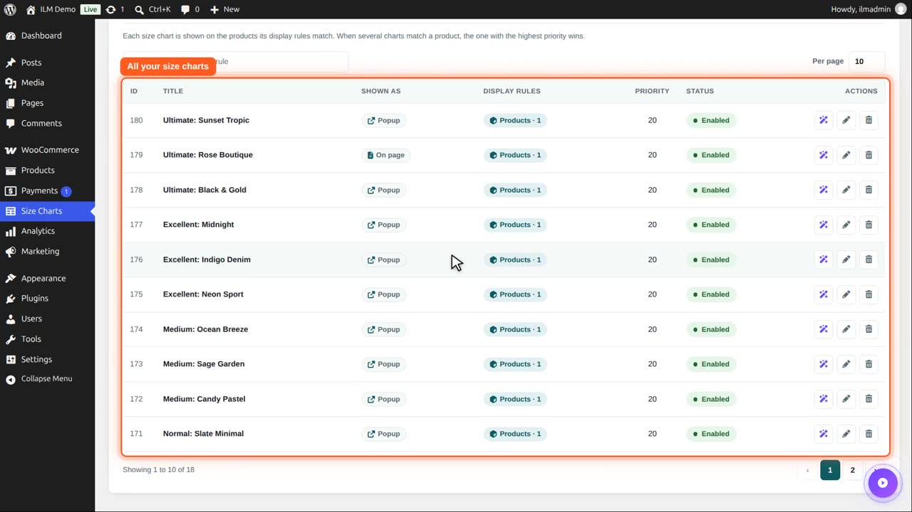
Shown as tells you how the shopper sees it: Popup is a button that opens a window, On page is a chart directly on the product page.
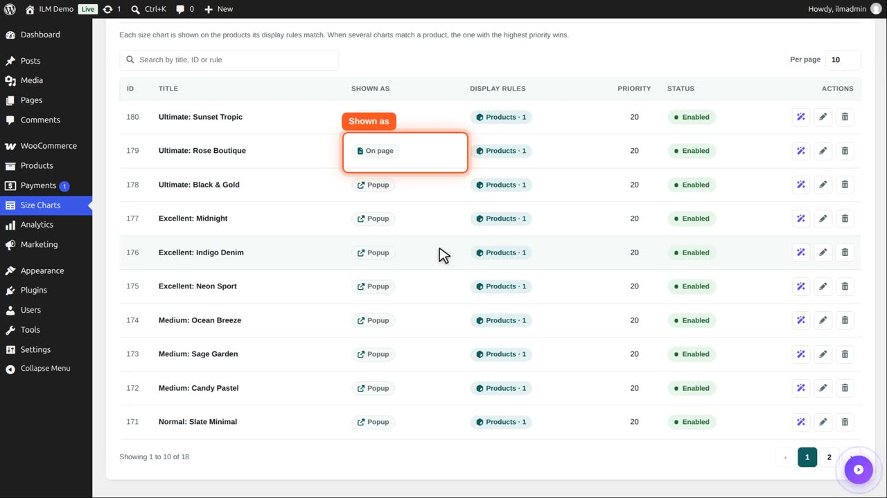
Display rules lists on which products it is shown: here one selected product. A chart without a rule says: not shown.
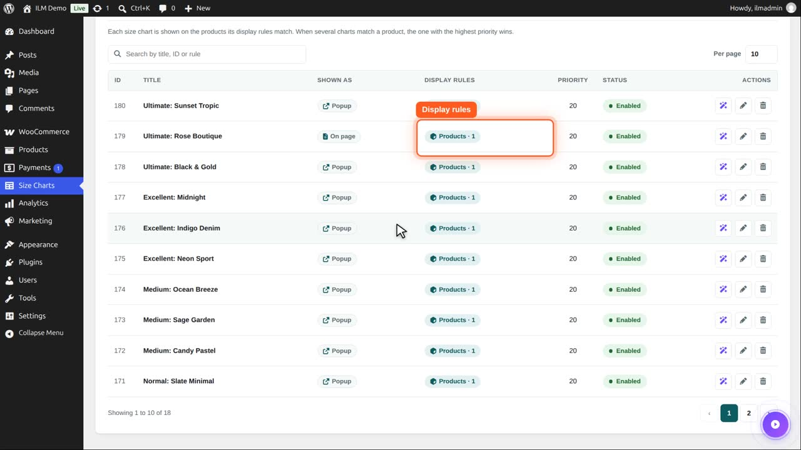
The search box finds a chart by its title, its ID or its rule. Type Mug, and the list shows only the mug chart.
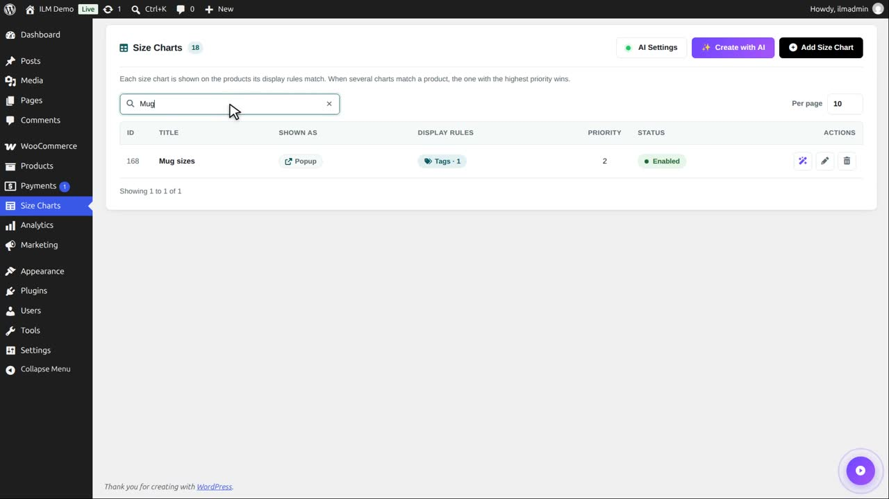
The cross clears the search. Per page sets how many charts one page of the list shows.
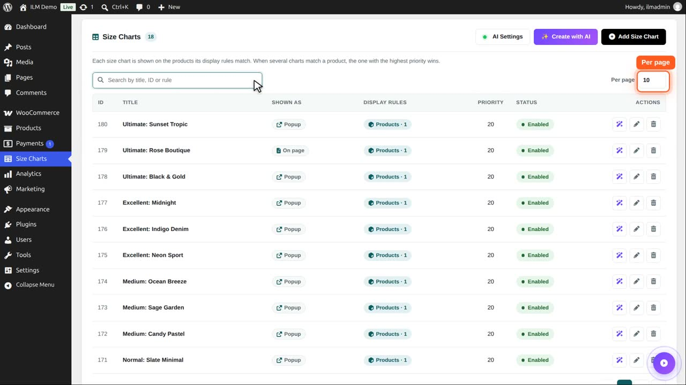
The status is a switch. Enabled means the chart is shown in the shop. Click it to disable the chart.
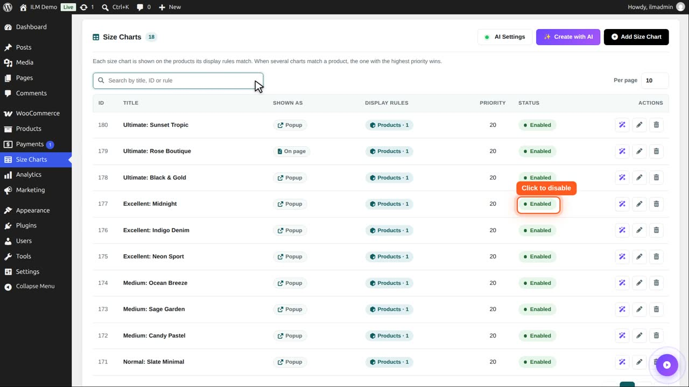
Now it says Disabled. The chart and its design are kept, but no product shows it. Click again to enable it.
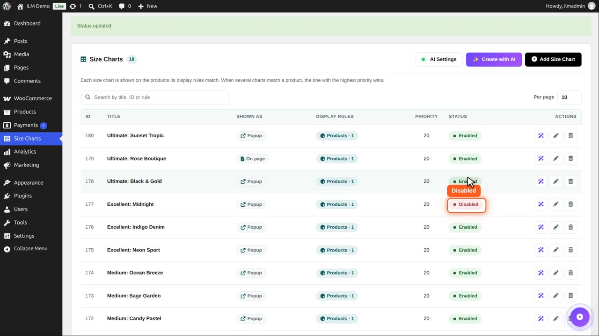
It is enabled again.
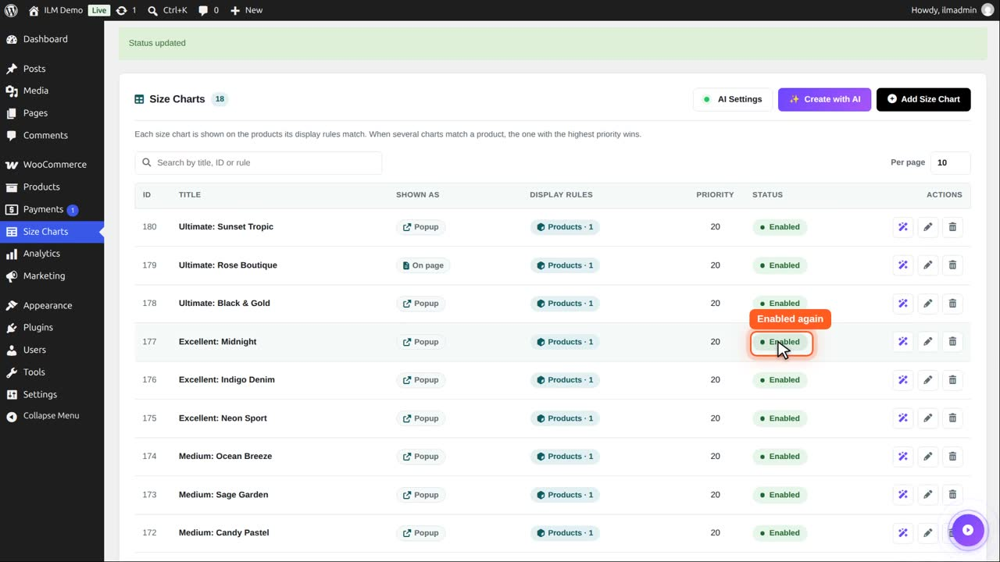
The pencil opens the chart to edit it. The next videos show every tab of that form.
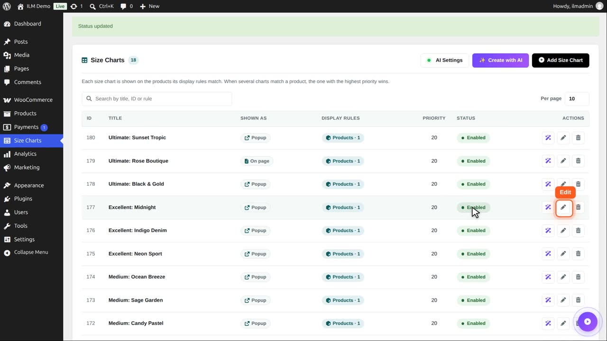
The magic wand opens the same chart with the AI design assistant, which changes it from a sentence you type. It has its own video.
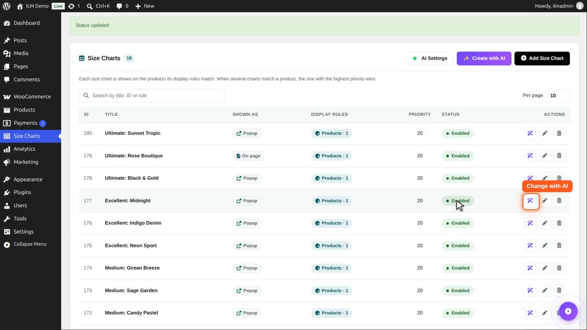
The bin deletes a chart. You are always asked first, because a deleted chart cannot be brought back.
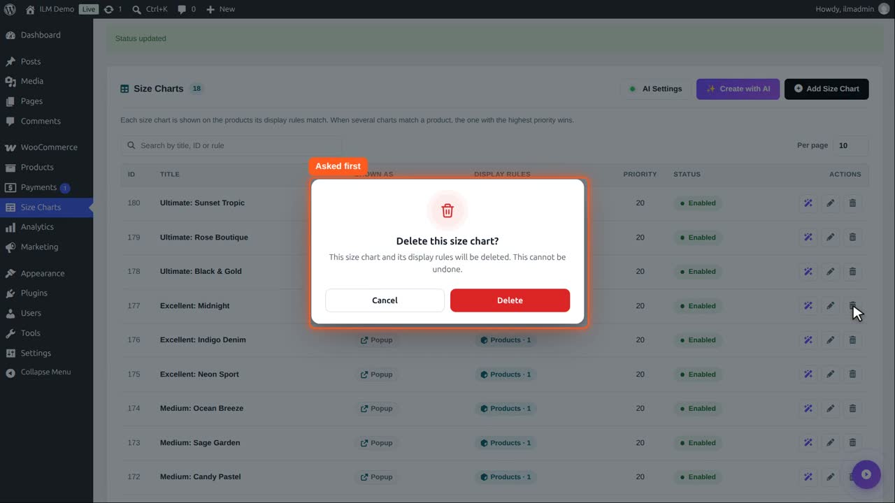
Cancel keeps it. To stop showing a chart for a while, disable it instead of deleting it.
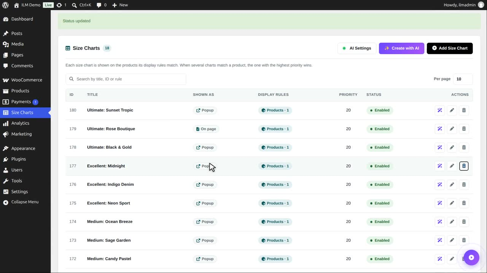
Add Size Chart starts a new chart, and Create with AI builds one for you in three steps.